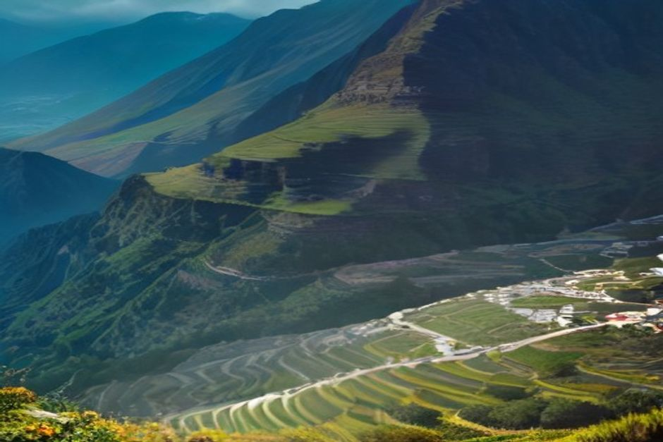

Curral das Freiras is a village hidden inside an extinct volcanic crater in Madeira's mountainous interior, ringed by peaks on every side and reachable from Funchal in about half an hour. It's one of the island's most dramatic detours from the coast — and one with a genuinely strange history behind its name.
What is Curral das Freiras?
Curral das Freiras is a parish and village sitting at roughly 461 metres above sea level, at the floor of what was once a huge volcanic caldera in the middle of Madeira. Sheer mountain walls — some of the island's highest peaks — rise almost straight up around it on every side, which is why for centuries the only way in was on foot or by mule along narrow mountain paths. Today it's one of the most-visited inland destinations on the island, not for any single monument but for the setting itself: a green, terraced village that looks like it shouldn't be reachable at all.

Why is Curral das Freiras called the Nun's Valley?
Because it was, quite literally, a refuge for nuns. In 1566, French corsairs raided Funchal, and the nuns of the city's Santa Clara Convent fled inland to this remote, mountain-locked valley to hide — a place so enclosed and hard to reach that it made a natural hideout. The name Curral das Freiras, "corral of the nuns," has stuck ever since, and the story is still the first thing most locals will tell you about the village.
How do you get to Curral das Freiras from Funchal?
By car, in about 20 to 30 minutes. Curral das Freiras sits roughly 15km north of Funchal, and for most of its history reaching it meant a long, cliff-hugging mountain road. That changed in 2004, when a 2.4km road tunnel opened straight through the crater wall, cutting what was once a lengthy, nerve-testing drive down to a few minutes. A hire car or taxi is the easiest way in; the Rodoeste bus line 81 also runs from Funchal, though it takes closer to 35 minutes.
What is the Eira do Serrado viewpoint, and do you need to stop there?
Yes — it's the classic first look at the valley. Eira do Serrado is a miradouro at around 1,095 metres, reached by its own signed road above the crater, where a short, easy walk from the car park brings you to a platform staring straight down into Curral das Freiras and the peaks that box it in. It's the postcard shot of the valley, and most visitors stop here before or after driving down into the village itself, since the two views — from above and from the floor — are completely different experiences of the same place.
Can you hike down into the crater instead of driving?
Yes. The Vereda das Voltas switchbacks down from Eira do Serrado to the village floor on foot, giving walkers a slower, closer version of the descent drivers make by road. For something longer, the PR12 (Caminho Real da Encumeada) is a serious 12.5km trail running between roughly 830 and 1,323 metres on the Boca da Corrida side of the crater, tracing the mountains that separate Curral das Freiras from the Encumeada pass — a full day's hike rather than a quick detour, with views over the valley the road never gives you.
What is Curral das Freiras famous for eating?
Chestnuts. The valley's cooler mountain climate suits chestnut trees far better than the coast, and the local kitchens build an entire menu around them — chestnut soup, chestnut cake, and a chestnut liqueur (licor de castanha) sold in small bottles from village shops and cafés. Trout (truta), farmed in the valley's cold streams, is the other dish locals point visitors toward. It's a genuinely different food scene from the espetada-and-poncha coast, worth the trip on its own if you care about eating well.
When is the Chestnut Festival in Curral das Freiras?
The Festa da Castanha runs over two days at the very end of October into early November — 31 October to 1 November in recent editions — organised by the parish's Casa do Povo. Stalls fill the village selling roasted chestnuts straight off the fire, chestnut liqueur, chestnut cake and ginjinha, and it's one of the few times of year Curral das Freiras gets genuinely busy. If you're in Madeira at the turn of November, it's worth timing a visit around it.
Is Curral das Freiras worth a half-day trip?
Yes, if you want to see a completely different side of Madeira from the coastal one. Between the drive up, the stop at Eira do Serrado, a walk around the village and lunch, most visitors budget three to four hours door to door from Funchal — easily done as a morning or afternoon excursion rather than a full day. It pairs naturally with other mountain stops like the Monte cable car or Pico dos Barcelos on the way back, since none of them require much of a detour from the same road.
Can you combine it with a day on the water?
Not on the same morning — Curral das Freiras is a mountain detour inland, and the coast is a separate world entirely. Most visitors treat the crater as a half-day trip on its own, then save another day for the water: a private boat trip with Chifbay from Funchal Marina covers Cabo Girão, hidden coves and dolphins, which sits at the opposite end of Madeira's landscape from a mountain-locked village at 461 metres — and it's exactly this range, from crater to coastline, that makes a few days here worth having.
Most of Madeira shows you the ocean. Curral das Freiras shows you what the island looks like when you turn your back on it.
It isn't a five-minute stop, and it isn't on the way to anywhere else — but a crater village that hid nuns from pirates, with chestnut liqueur waiting at the bottom, earns its half-day easily.